2+2[1] 4Fundamentals of R and RStudio, fundamentals of packages of RStudio, data manipulations, data transformations, normalization, standardization, missing values imputation, dummy variables, data visualization (2D and 3D), basic architecture of machine learning analytical cycle, descriptive analytics-case study covering data manipulation, measures of central tendency, measures of dispersion, measures of distribution, measures of associations, t-test, f-test, ANOVA, Chi-square test, basic statistical modeling framework.
Introduction to the R Ecosystem
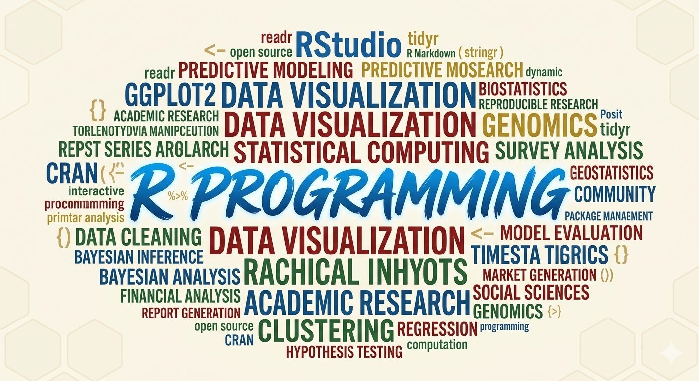
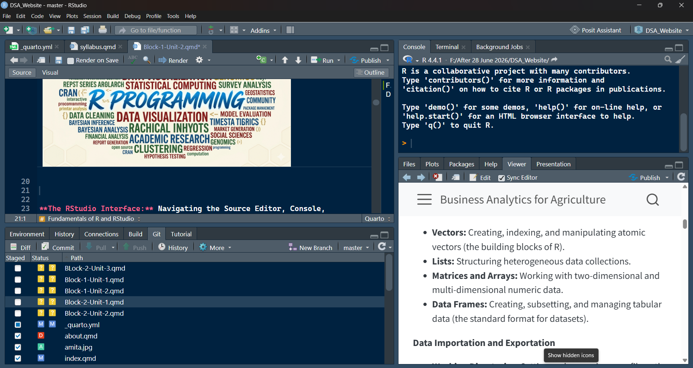
The upper left part of Rstudio is script writing panel and used writing commands for the data science tasks.
The upper right part is console where we can see the output of the comands and terminal to access the terminal commands.
The lower left part shows the history of the project, environment and tutorials.
The lower right part contains the file structures of the projects, views the visual outputs like plots, presentations, web pages, etc. Help tab is useful to know about basics of the packages and commands.
Basic Workflow: Creating projects, writing scripts, executing code in the console, and saving your work.
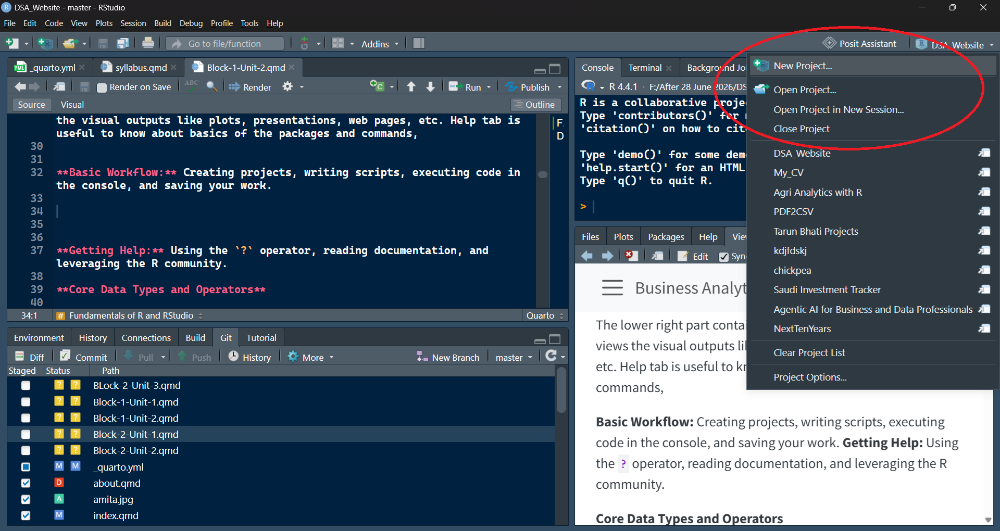
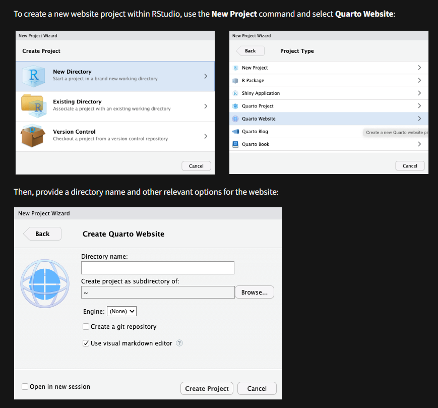
Core Data Types and Operators
(+, -, *, /), assignment (<-), and logical operators (==, !=, <, >, >=, <=, &, |).2+2[1] 42-1[1] 12*3[1] 62/5[1] 0.4D <- 3 + 5
D[1] 8# 1. Setup sample data
x <- c(5, 12, 8)
y <- c(5, 3, 10)
# 2. Relational Operators (Returns a logical vector: TRUE or FALSE)
x == y # Equal to? -> TRUE FALSE FALSE[1] TRUE FALSE FALSEx != y # Not equal to? -> FALSE TRUE TRUE[1] FALSE TRUE TRUEx < y # Less than? -> FALSE FALSE TRUE[1] FALSE FALSE TRUEx > y # Greater than? -> FALSE TRUE FALSE[1] FALSE TRUE FALSEx <= y # Less than or equal to? -> TRUE FALSE TRUE[1] TRUE FALSE TRUEx >= y # Greater than or equal to?-> TRUE TRUE FALSE[1] TRUE TRUE FALSE# 3. Logical Operators (Element-wise)
# Let's create two logical vectors
a <- c(TRUE, TRUE, FALSE)
b <- c(TRUE, FALSE, FALSE)
a & b # Element-wise AND (Both must be TRUE) -> TRUE FALSE FALSE[1] TRUE FALSE FALSEa | b # Element-wise OR (At least one TRUE) -> TRUE TRUE FALSE[1] TRUE TRUE FALSENA, NaN, and NULL values.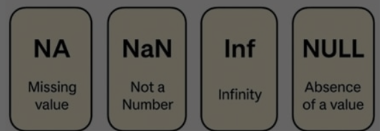
R Data Structures
# --- Using the combine function c() ---
numeric_vec <- c(1.5, 2.8, 3.1) # Double (numeric)
integer_vec <- c(1L, 5L, 10L) # Integer (note the 'L' suffix)
character_vec <- c("apple", "banana") # Character (string)
logical_vec <- c(TRUE, FALSE, TRUE) # Logical (boolean)
numeric_vec[1] 1.5 2.8 3.1integer_vec[1] 1 5 10character_vec[1] "apple" "banana"logical_vec[1] TRUE FALSE TRUE# --- Creating Sequences ---
seq_colon <- 1:10 # Sequence from 1 to 10 by 1
seq_func <- seq(from = 0, to = 1, by = 0.2) # c(0, 0.2, 0.4, 0.6, 0.8, 1.0)
seq_len <- seq_len(5) # Safe sequence from 1 to 5
seq_colon [1] 1 2 3 4 5 6 7 8 9 10seq_func[1] 0.0 0.2 0.4 0.6 0.8 1.0seq_len[1] 1 2 3 4 5# --- Creating Repeated Values ---
rep_vector <- rep(1:3, times = 3) # c(1,2,3, 1,2,3, 1,2,3)
rep_each <- rep(c("A", "B"), each = 2) # c("A", "A", "B", "B")
rep_vector[1] 1 2 3 1 2 3 1 2 3rep_each[1] "A" "A" "B" "B"List can contain any sort of data with varying length and formats.
list_all = list(
numeric_vec,
integer_vec,
character_vec,
logical_vec,
seq_colon,
seq_func,
seq_len,
rep_vector,
rep_each
)
list_all[[1]]
[1] 1.5 2.8 3.1
[[2]]
[1] 1 5 10
[[3]]
[1] "apple" "banana"
[[4]]
[1] TRUE FALSE TRUE
[[5]]
[1] 1 2 3 4 5 6 7 8 9 10
[[6]]
[1] 0.0 0.2 0.4 0.6 0.8 1.0
[[7]]
[1] 1 2 3 4 5
[[8]]
[1] 1 2 3 1 2 3 1 2 3
[[9]]
[1] "A" "A" "B" "B"# --- Creating a 3D Array ---
# Let's create an array with 3 rows, 4 columns, and 2 layers (3 x 4 x 2)
arr <- array(1:24, dim = c(3, 4, 2))
# --- Indexing & Subsetting ---
arr[1, 2, 1] # Row 1, Column 2, Layer 1[1] 4arr[, , 2] # Extracts the entire 2nd Layer (returns a 2D matrix) [,1] [,2] [,3] [,4]
[1,] 13 16 19 22
[2,] 14 17 20 23
[3,] 15 18 21 24arr[2, , ] # Extracts Row 2 across all columns and layers [,1] [,2]
[1,] 2 14
[2,] 5 17
[3,] 8 20
[4,] 11 23# --- Manipulating & Summarizing Arrays ---
# Apply a function across specific dimensions using apply()
# Calculate column sums for each layer (Margin 2 = Columns)
apply(arr, MARGIN = 2, FUN = sum)[1] 48 66 84 102# Combine two arrays along a dimension using abind (requires library)
# install.packages("abind")
# library(abind)
# combined_arr <- abind(arr, arr, along = 3) # Creates a 3 x 4 x 4 array
arr, , 1
[,1] [,2] [,3] [,4]
[1,] 1 4 7 10
[2,] 2 5 8 11
[3,] 3 6 9 12
, , 2
[,1] [,2] [,3] [,4]
[1,] 13 16 19 22
[2,] 14 17 20 23
[3,] 15 18 21 24# --- Base R: Creating a Data Frame ---
df <- data.frame(
employee_id = c(101, 102, 103, 104),
name = c("Alice", "Bob", "Charlie", "David"),
salary = c(75000, 62000, 81000, 95000),
remote = c(TRUE, FALSE, TRUE, TRUE),
stringsAsFactors = FALSE # Standard practice in modern R
)
# --- Tidyverse: Creating a Tibble ---
# Note: Requires installing/loading the library: install.packages("tidyverse")
library(tibble)
tb <- tibble(
employee_id = c(101, 102, 103, 104),
name = c("Alice", "Bob", "Charlie", "David"),
salary = c(75000, 62000, 81000, 95000),
remote = c(TRUE, FALSE, TRUE, TRUE)
)
df employee_id name salary remote
1 101 Alice 75000 TRUE
2 102 Bob 62000 FALSE
3 103 Charlie 81000 TRUE
4 104 David 95000 TRUEtb# A tibble: 4 × 4
employee_id name salary remote
<dbl> <chr> <dbl> <lgl>
1 101 Alice 75000 TRUE
2 102 Bob 62000 FALSE
3 103 Charlie 81000 TRUE
4 104 David 95000 TRUE # --- Subsetting Columns (Variables) ---
df$name # Returns the "name" column as a vector[1] "Alice" "Bob" "Charlie" "David" df[["salary"]] # Also returns "salary" as a vector[1] 75000 62000 81000 95000df[, c("name", "salary")] # Returns a data frame with just those two columns name salary
1 Alice 75000
2 Bob 62000
3 Charlie 81000
4 David 95000# --- Subsetting Rows (Observations) ---
df[1, ] # Extracts the entire 1st row employee_id name salary remote
1 101 Alice 75000 TRUEdf[1:3, ] # Extracts rows 1 through 3 employee_id name salary remote
1 101 Alice 75000 TRUE
2 102 Bob 62000 FALSE
3 103 Charlie 81000 TRUE# --- Logical Subsetting (Filtering Rows) ---
# Find employees making more than $70,000
df[df$salary > 70000, ] employee_id name salary remote
1 101 Alice 75000 TRUE
3 103 Charlie 81000 TRUE
4 104 David 95000 TRUE# Find employees who are remote AND making more than $80,000
df[df$remote == TRUE & df$salary > 80000, ] employee_id name salary remote
3 103 Charlie 81000 TRUE
4 104 David 95000 TRUE# --- Inspecting the Dataset ---
head(df, n = 2) # View the first 2 rows employee_id name salary remote
1 101 Alice 75000 TRUE
2 102 Bob 62000 FALSEdim(df) # Returns number of rows and columns (e.g., 4 4)[1] 4 4str(df) # Displays the structure, data types, and contents'data.frame': 4 obs. of 4 variables:
$ employee_id: num 101 102 103 104
$ name : chr "Alice" "Bob" "Charlie" "David"
$ salary : num 75000 62000 81000 95000
$ remote : logi TRUE FALSE TRUE TRUEsummary(df) # Provides statistical summaries of numeric columns employee_id name salary remote
Min. :101.0 Length:4 Min. :62000 Mode :logical
1st Qu.:101.8 Class :character 1st Qu.:71750 FALSE:1
Median :102.5 Mode :character Median :78000 TRUE :3
Mean :102.5 Mean :78250
3rd Qu.:103.2 3rd Qu.:84500
Max. :104.0 Max. :95000 # --- Adding and Modifying Columns ---
# Add a new column based on calculation
df$bonus <- df$salary * 0.10
# Modify an existing column
df$salary <- df$salary + 2000
# --- Adding Rows ---
new_employee <- data.frame(employee_id = 105, name = "Eva", salary = 68000, remote = FALSE, bonus = 6800)
df <- rbind(df, new_employee)
# --- Sorting (Ordering) Data ---
# Sort the entire dataset by salary in descending order (-)
df_sorted <- df[order(-df$salary), ]
# --- Handling Missing Data (NA) ---
# Check which rows have missing data
is.na(df) employee_id name salary remote bonus
[1,] FALSE FALSE FALSE FALSE FALSE
[2,] FALSE FALSE FALSE FALSE FALSE
[3,] FALSE FALSE FALSE FALSE FALSE
[4,] FALSE FALSE FALSE FALSE FALSE
[5,] FALSE FALSE FALSE FALSE FALSE# Remove any rows containing missing values completely
df_clean <- na.omit(df)Data Importation and Exportation
The Problem R Projects Solve
New R users often write setwd("C:/Users/Arun/Desktop/data") at the top of every script. This breaks the moment the script moves to another computer, another folder, or another person’s laptop. R Projects fix this permanently.
Setting It Up
Create a Project: File → New Project → New Directory (or Existing Directory) → give it a name.
This creates a .Rproj file in that folder — this file IS the anchor. Wherever this file sits, that becomes “home” whenever you open the project.
Double-click the .Rproj file (or open via RStudio’s Project menu) to launch — RStudio automatically sets the working directory to that folder. No setwd() needed, ever.
The One Rule to Teach
Never use setwd() with absolute paths. Always use paths relative to the project root.
Instead of:
#data <- read.csv("C:/Users/Arun/Desktop/MyProject/data/sales.csv")Write:
#data <- read.csv("data/sales.csv")Recommended Folder Structure
Have students create this inside every new project:
MyProject/ ├── MyProject.Rproj ├── data/ (raw data, never edited manually) ├── scripts/ (.R or .qmd files) ├── output/ (plots, results, reports) └── README.md
The here Package (strongly recommend)
Even relative paths can break if a script is sourced from a subfolder. The here package solves this:
#install.packages("here")
library(here)Warning: package 'here' was built under R version 4.4.2here() starts at F:/After 28 June 2026/Business_analytics_for_agriculture#data <- read.csv(here("data", "sales.csv"))
#ggsave(here("output", "plot1.png"))here() always resolves from the project root, no matter which subfolder the script runs from. Make this a habit from day one — it saves enormous debugging pain later.
Quick Checklist for Students
Data Manipulation (Introduction to the Tidyverse)
Setup
library(tidyverse)Warning: package 'tidyverse' was built under R version 4.4.3Warning: package 'ggplot2' was built under R version 4.4.3Warning: package 'tidyr' was built under R version 4.4.3Warning: package 'purrr' was built under R version 4.4.2Warning: package 'dplyr' was built under R version 4.4.3Warning: package 'stringr' was built under R version 4.4.3Warning: package 'lubridate' was built under R version 4.4.2── Attaching core tidyverse packages ──────────────────────── tidyverse 2.0.0 ──
✔ dplyr 1.2.1 ✔ purrr 1.0.4
✔ forcats 1.0.0 ✔ readr 2.1.5
✔ ggplot2 3.5.2 ✔ stringr 1.6.0
✔ lubridate 1.9.4 ✔ tidyr 1.3.2
── Conflicts ────────────────────────────────────────── tidyverse_conflicts() ──
✖ dplyr::filter() masks stats::filter()
✖ dplyr::lag() masks stats::lag()
ℹ Use the conflicted package (<http://conflicted.r-lib.org/>) to force all conflicts to become errorshead(diamonds) # already loaded, ~54,000 rows# A tibble: 6 × 10
carat cut color clarity depth table price x y z
<dbl> <ord> <ord> <ord> <dbl> <dbl> <int> <dbl> <dbl> <dbl>
1 0.23 Ideal E SI2 61.5 55 326 3.95 3.98 2.43
2 0.21 Premium E SI1 59.8 61 326 3.89 3.84 2.31
3 0.23 Good E VS1 56.9 65 327 4.05 4.07 2.31
4 0.29 Premium I VS2 62.4 58 334 4.2 4.23 2.63
5 0.31 Good J SI2 63.3 58 335 4.34 4.35 2.75
6 0.24 Very Good J VVS2 62.8 57 336 3.94 3.96 2.48Both %>% and |> do the same thing — pass the object on the left into the function on the right.
# Native pipe (R 4.1+) - recommended for students today
diamonds |> head()# A tibble: 6 × 10
carat cut color clarity depth table price x y z
<dbl> <ord> <ord> <ord> <dbl> <dbl> <int> <dbl> <dbl> <dbl>
1 0.23 Ideal E SI2 61.5 55 326 3.95 3.98 2.43
2 0.21 Premium E SI1 59.8 61 326 3.89 3.84 2.31
3 0.23 Good E VS1 56.9 65 327 4.05 4.07 2.31
4 0.29 Premium I VS2 62.4 58 334 4.2 4.23 2.63
5 0.31 Good J SI2 63.3 58 335 4.34 4.35 2.75
6 0.24 Very Good J VVS2 62.8 57 336 3.94 3.96 2.48# magrittr pipe - older, still common in tutorials/code online
diamonds %>% head()# A tibble: 6 × 10
carat cut color clarity depth table price x y z
<dbl> <ord> <ord> <ord> <dbl> <dbl> <int> <dbl> <dbl> <dbl>
1 0.23 Ideal E SI2 61.5 55 326 3.95 3.98 2.43
2 0.21 Premium E SI1 59.8 61 326 3.89 3.84 2.31
3 0.23 Good E VS1 56.9 65 327 4.05 4.07 2.31
4 0.29 Premium I VS2 62.4 58 334 4.2 4.23 2.63
5 0.31 Good J SI2 63.3 58 335 4.34 4.35 2.75
6 0.24 Very Good J VVS2 62.8 57 336 3.94 3.96 2.48diamonds |>
filter(cut == "Ideal", price > 5000) |> # rows: only Ideal cut, expensive
select(carat, cut, price, color) # columns: keep only these# A tibble: 4,985 × 4
carat cut price color
<dbl> <ord> <int> <ord>
1 1.16 Ideal 5001 E
2 1.16 Ideal 5001 E
3 1.07 Ideal 5002 I
4 1.1 Ideal 5002 H
5 1.2 Ideal 5002 J
6 1.14 Ideal 5003 H
7 1.11 Ideal 5004 E
8 1.03 Ideal 5005 H
9 1.14 Ideal 5005 E
10 0.72 Ideal 5006 F
# ℹ 4,975 more rowsdiamonds |>
mutate(price_per_carat = price / carat) |> # new variable
arrange(desc(price_per_carat)) |> # sort, highest first
select(carat, price, price_per_carat)# A tibble: 53,940 × 3
carat price price_per_carat
<dbl> <int> <dbl>
1 1.04 18542 17829.
2 1.07 18279 17083.
3 1.03 17590 17078.
4 1.07 18114 16929.
5 1.02 17100 16765.
6 1.07 17909 16737.
7 1.09 18231 16726.
8 1 16469 16469
9 1.01 16234 16073.
10 1 16073 16073
# ℹ 53,930 more rowsdiamonds |>
group_by(cut) |>
summarize(
avg_price = mean(price),
total_sales = sum(price),
count = n()
) |>
arrange(desc(total_sales))# A tibble: 5 × 4
cut avg_price total_sales count
<ord> <dbl> <int> <int>
1 Ideal 3458. 74513487 21551
2 Premium 4584. 63221498 13791
3 Very Good 3982. 48107623 12082
4 Good 3929. 19275009 4906
5 Fair 4359. 7017600 1610This is the exercise that shows why the pipe matters — one readable chain instead of nested function calls:
diamonds |>
filter(price > 1000) |>
mutate(price_per_carat = price / carat) |>
group_by(color) |>
summarize(
avg_price = mean(price),
avg_ppc = mean(price_per_carat),
n = n()
) |>
arrange(desc(avg_price))# A tibble: 7 × 4
color avg_price avg_ppc n
<ord> <dbl> <dbl> <int>
1 I 6404. 4644. 4191
2 J 6254. 4263. 2345
3 H 5785. 4695. 6201
4 G 5277. 4939. 8118
5 F 4769. 4798. 7071
6 D 4215. 4699. 4743
7 E 4137. 4513. 6747Pipe operators Reads left to right like a sentence: *“Take diamonds, filter for price above 1000, create price-per-carat, group by color, summarize, then sort by average price descending.”**
Find: “Which diamond clarity grade has the highest average price per carat, considering only diamonds under 2 carats?”
HINT: filter → mutate → group_by → summarize → arrange
Basic Data Visualization
plot(), hist(), and boxplot().data("trees")
plot(trees$Girth, trees$Volume)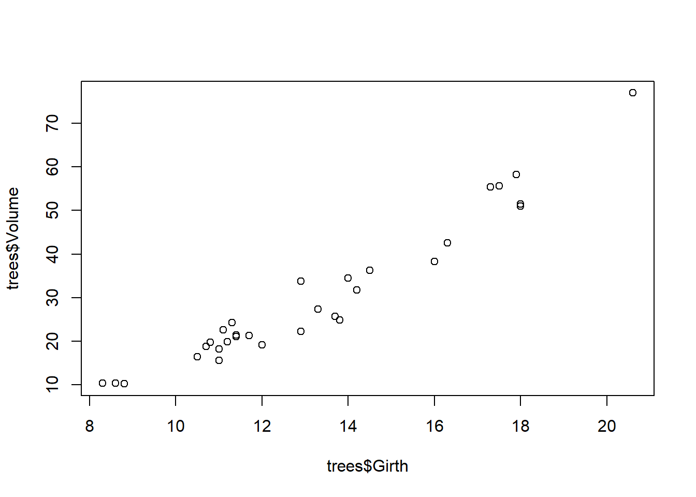
hist(trees$Girth, n=30)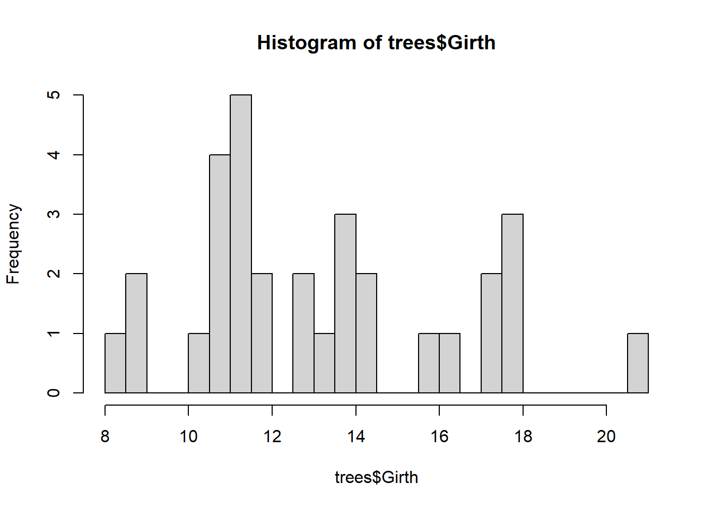
boxplot(trees$Girth, horizontal = TRUE)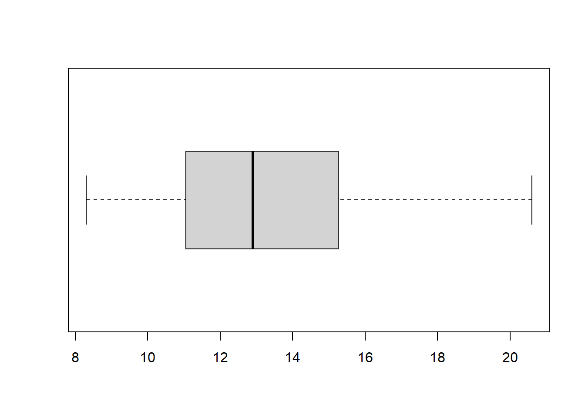

ggplot2 is the most versatile package to create basic to the advance level graphics and plots. You can visit the GGPLOT gallery, learn more about GGPLOT from this LINK to see what ggplot2 package is capable of. Checkout the GGPLOT2 CHEATSHEET and dedicated book Data Visualization.
Some experts have used GGPLOT2 to create artistic plots and build career in data visualization and storytelling. Check following profiles of ggplot artists:
Essential Plot Types: Building scatter plots, bar charts, line graphs, and histograms.
Customizing Plots: Adding titles, changing axis labels, and applying basic themes.
Anatomy of a Plot
A plot is made up of layers shown as following:
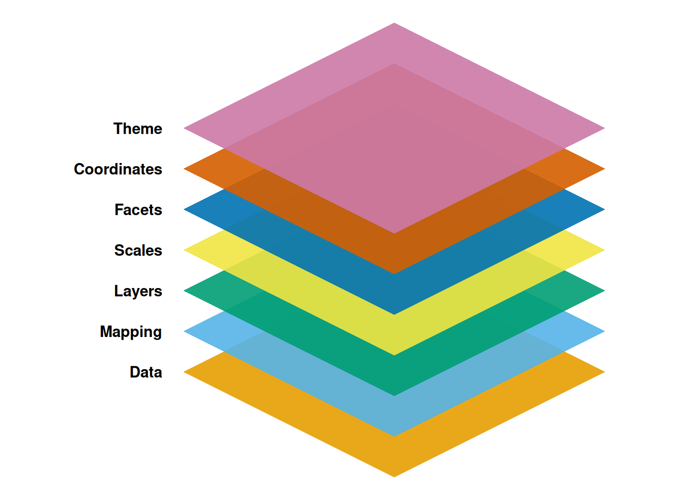
Components of a plot
Therr are variety of components that make a plot. The following image shows the plot components and corresponding command from ggplot package to create that element:
 Source: Author Isabella Benabaye
Source: Author Isabella Benabaye
Steps to create a basic ggplot
# 1. Call the ggplot2 package from library
library(ggplot2)
# 2. Load data in ggplot
ggplot(data = ChickWeight)
# 3. Add aesthetics (x and y axis)
ggplot(data= ChickWeight, aes(x=Time, y=weight))
# 4. Add layers of type of plot, transformation or position adjustment using geoms
ggplot(data = ChickWeight, aes(x=Time, y=weight)) +
geom_point() + #To create scatter plot
geom_smooth(formula = y ~x, method = "lm")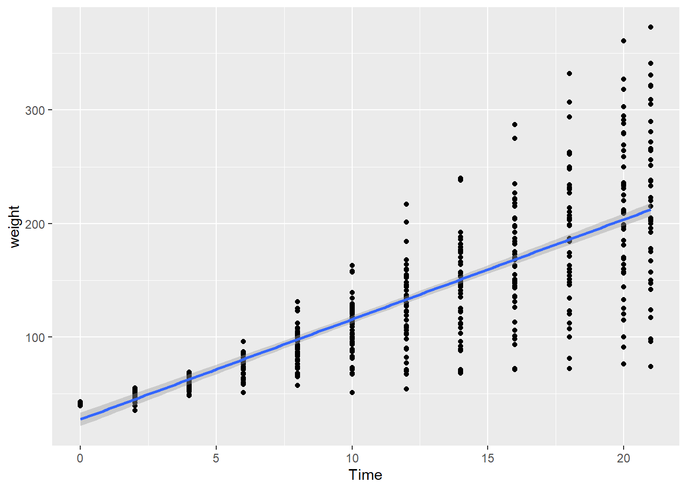
# 5. Adding Scales to differentiate the different segments
ggplot(data = ChickWeight, aes(x=Time, y=weight, colour = as.factor(Diet))) +
geom_point() + #To create scatter plot
geom_smooth(formula = y ~x, method = "loess") + # Setting leoss rgression line
scale_colour_viridis_d() # Scale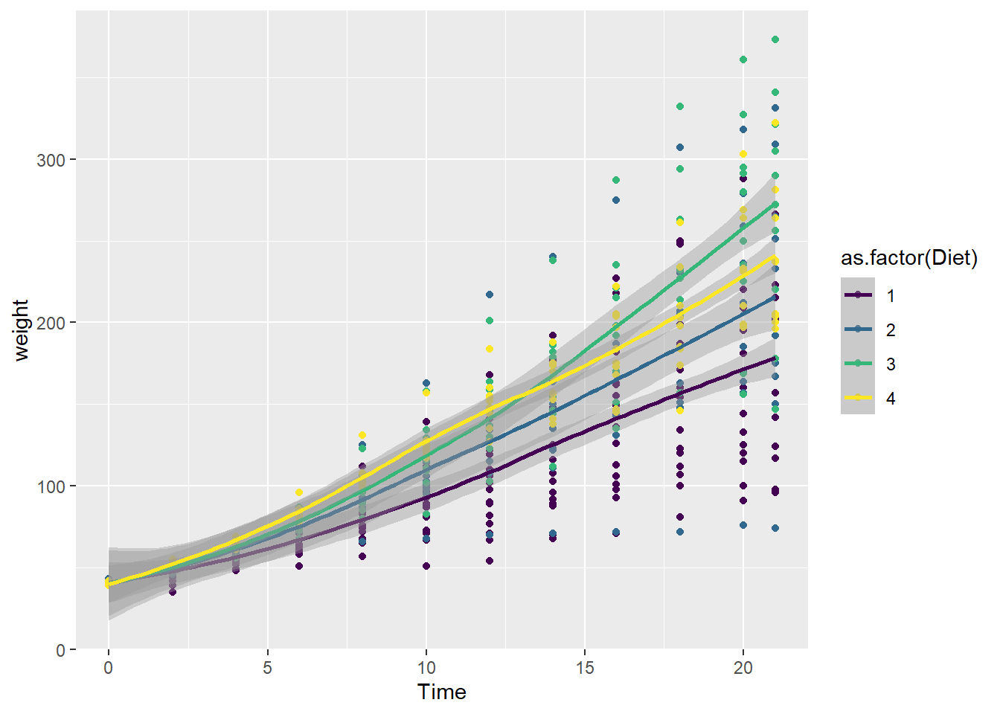
# 6. Subsetting plot into facets if required
ggplot(data = ChickWeight, aes(x=Time, y=weight)) +
geom_point() + #To create scatter plot
facet_wrap(~Diet) # To create facets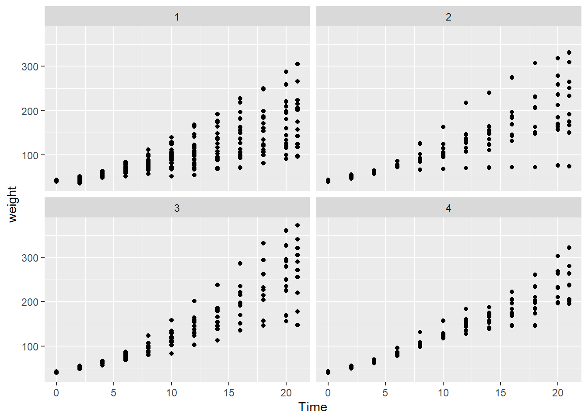
# 7. Coordinates setting
ggplot(data = ChickWeight, aes(x=Time, y=weight)) +
geom_point() + #To create scatter plot
coord_fixed() # To set coordinates fixed ratio as per scaleggplot(data = ChickWeight, aes(x=Time, y=weight)) +
geom_point() + #To create scatter plot
coord_fixed(0.5) # To set coordinates fixed ratio as per choice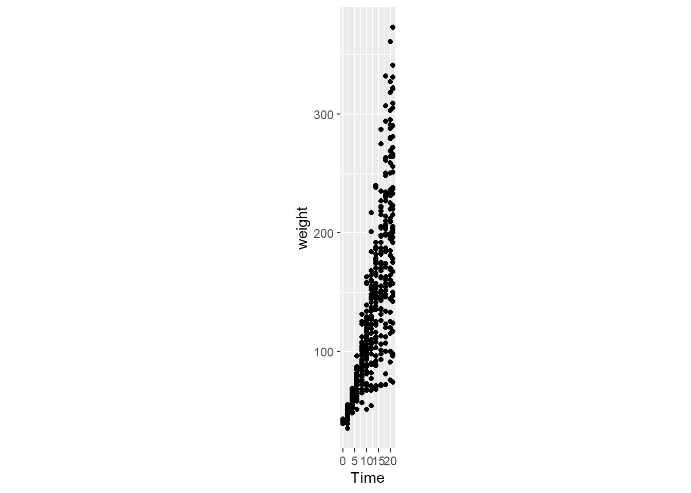
ggplot(data = ChickWeight, aes(x=Time, y=weight)) +
geom_point() + #To create scatter plot
coord_fixed(1.5) # To set coordinates fixed ratio as per choiceggplot(data = ChickWeight, aes(x=Time, y=weight)) +
geom_point() + #To create scatter plot
coord_fixed(0.01) # To set coordinates fixed ratio as per choice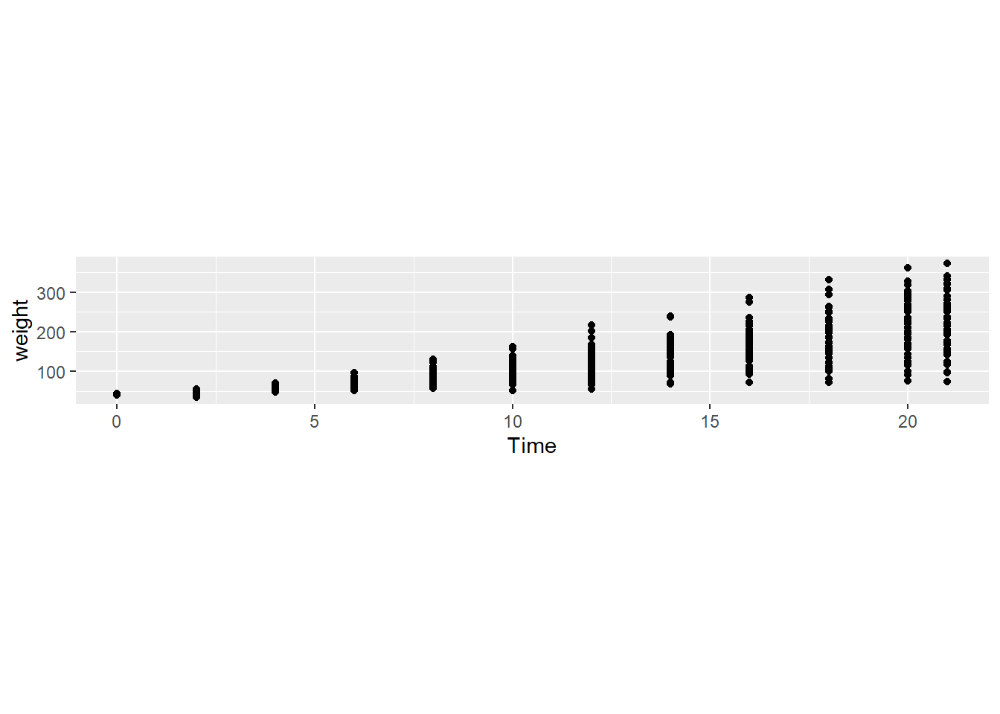
# 8. Adding theme to the plot (title, subtitle, axis label, plot background, graph background, caption, annotation, font size, font type, font formats, etc.)
ggplot(data = ChickWeight, aes(x=Time, y=weight, colour = Diet)) +
geom_point() + #To create scatter plot
coord_fixed(0.01) + # To set coordinates
labs(
title = "Chick Development Analysis",
subtitle = "Outcomes of an experiment with 578 Chicks",
caption = "Study done by students of Agri MBA-2 Batch 2024-26 in May 2026 at IABM",
x = "Time in Days",
y = "Weight in gram"
) +
theme(
plot.title = element_text(face = "bold", size = 14),
plot.subtitle = element_text(face = "bold", size = 9, color="grey70"),
axis.title.y = element_text(color = "darkblue"),
axis.title.x = element_text(color = "darkgreen")
)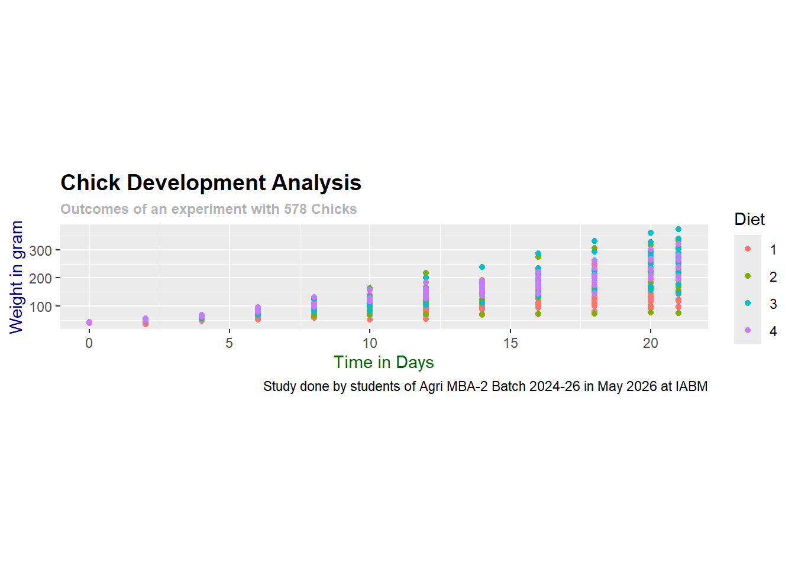
Use any inbuilt dataset in R and create 5 different visuals using ggplot2 package. (Visit GGplot Gallery for the help).
Programming Fundamentals in R
if, else if, and else statements.Basic Syntax
if (condition) { # code if TRUE } else if (another_condition) { # code if that’s TRUE } else { # code if none are TRUE }
Example 1: Simple if
age <- 20
if (age >= 18) {
print("You are an adult")
}[1] "You are an adult"Try changing age value 15, 17.5 and 21 and check if else statement is properly working or not.
Example 2: if / else
marks <- 45
if (marks >= 40) {
print("Pass")
} else {
print("Fail")
}[1] "Pass"Check the if lese statement command for marks 35 and 50.
Example 3: if / else if / else (grading system)
marks <- 78
if (marks >= 90) {
print("Grade: A")
} else if (marks >= 75) {
print("Grade: B")
} else if (marks >= 60) {
print("Grade: C")
} else if (marks >= 40) {
print("Grade: D")
} else {
print("Grade: F")
}[1] "Grade: B"Check the Grade for Marks 40, 70, and 90.
Example 4: Using it inside a function (practical, real-world style)
check_bmi <- function(bmi) {
if (bmi < 18.5) {
return("Underweight")
} else if (bmi < 25) {
return("Normal")
} else if (bmi < 30) {
return("Overweight")
} else {
return("Obese")
}
}
check_bmi(27) # "Overweight"[1] "Overweight"check_bmi(21) # "Normal"[1] "Normal"Example 5: Vectorized alternative — ifelse()
Regular if only checks one value at a time. When you need to apply a condition across an entire column/vector (very common with sales/data work), use ifelse() instead:
scores <- c(45, 88, 62, 30, 95)
result <- ifelse(scores >= 50, "Pass", "Fail")
print(result)[1] "Fail" "Pass" "Pass" "Fail" "Pass"Common Mistake to Warn Students About
else must be on the same line as the closing } of the if block — otherwise R throws an error (especially when running line-by-line in a script).
# # WRONG (in a script run line-by-line)
# if (age >= 18) {
# print("Adult")
# }
# else {
# print("Minor")
# }
# CORRECT
if (age >= 18) {
print("Adult")
} else {
print("Minor")
}[1] "Adult"Quick Exercise
Write a function classify_diamond(price) that returns "Budget" if price < 1000, "Mid-range" if price < 5000, and "Luxury" otherwise — then test it using values pulled from the diamonds$price column.
The Core Idea
R is built to operate on entire vectors at once, not element-by-element like traditional loops. Vectorized code is faster, shorter, and more “R-like.”
x <- c(1, 2, 3, 4, 5)
x * 2[1] 2 4 6 8 10# 2 4 6 8 10 — every element multiplied, no loop neededExample 1: Loop vs. Vectorized (the classic comparison)
Slow, traditional way (loop):
x <- 1:1000000
result <- numeric(length(x))
for (i in seq_along(x)) {
result[i] <- x[i] * 2
}Fast, vectorized way:
x <- 1:1000000
result <- x * 2Same output — but the vectorized version runs dramatically faster because R’s internal C code handles the looping, not R itself.
Example 2: Conditional Logic — ifelse() Instead of a Loop
scores <- c(45, 88, 62, 30, 95)
# Loop way (avoid this)
result <- character(length(scores))
for (i in seq_along(scores)) {
if (scores[i] >= 50) result[i] <- "Pass" else result[i] <- "Fail"
}
# Vectorized way (do this)
result <- ifelse(scores >= 50, "Pass", "Fail")Example 3: Applying a Function Across a Vector
prices <- c(1200, 450, 3400, 800, 5200)
# No loop needed — sqrt() is already vectorized
sqrt(prices)[1] 34.64102 21.21320 58.30952 28.28427 72.11103# Custom logic without a loop, using ifelse()
category <- ifelse(prices < 1000, "Budget",
ifelse(prices < 5000, "Mid-range", "Luxury"))Example 4: Vectorized Math on Data Frame Columns
diamonds$price_per_carat <- diamonds$price / diamonds$caratNo loop, no apply() — one line operates on all ~54,000 rows simultaneously.
Example 5: Logical Indexing (a vectorized filter)
x <- c(10, 25, 3, 47, 8, 62)
x[x > 20] # 25 47 62 — pulls all elements matching the condition[1] 25 47 62sum(x > 20) # 3 — counts how many meet the condition[1] 3When You Do Still Need a Loop
Vectorization doesn’t cover everything — use loops when each step depends on the previous result (e.g., simulations, recursive calculations):
balance <- numeric(10)
balance[1] <- 1000
for (i in 2:10) {
balance[i] <- balance[i-1] * 1.05 # depends on prior value
}The Rule of Thumb to Teach
If you’re writing a for loop to do simple math or apply a condition to a whole column — stop. There’s almost always a vectorized way.
Quick Exercise
Here is the 20 chick weights:
60, 120, 221, 175, 80, 280, 305, 155, 98, 103, 200, 190, 352, 75, 180, 210, 198, 98, 98, 170
Classify each chick as "Low", "Medium", or "High" using nested ifelse() — then time it against a loop-based version using system.time() to see the speed difference themselves.
for and while loops for repetitive tasks.for Loop — When You Know How Many Times to Repeat
for (i in 1:5) {
print(i)
}[1] 1
[1] 2
[1] 3
[1] 4
[1] 5# 1 2 3 4 5Example 1: Looping Over a Vector
fruits <- c("Apple", "Banana", "Mango")
for (f in fruits) {
print(paste("I like", f))
}[1] "I like Apple"
[1] "I like Banana"
[1] "I like Mango"Example 2: Looping With an Index (common in data work)
prices <- c(100, 250, 400)
for (i in 1:length(prices)) {
cat("Item", i, "costs Rs.", prices[i], "\n")
}Item 1 costs Rs. 100
Item 2 costs Rs. 250
Item 3 costs Rs. 400 Tip: prefer seq_along(prices) over 1:length(prices) — it safely handles an empty vector (1:0 gives 1, 0, which breaks the loop).
for (i in seq_along(prices)) {
cat("Item", i, "costs Rs.", prices[i], "\n")
}Item 1 costs Rs. 100
Item 2 costs Rs. 250
Item 3 costs Rs. 400 Example 3: Accumulating a Result
total <- 0
sales <- c(1200, 450, 3400, 800)
for (s in sales) {
total <- total + s
}
print(total) # 5850[1] 5850(Note: sum(sales) does this in one vectorized line — loops are for teaching the concept, but real code should prefer vectorization once understood.)
while Loop — When You Don’t Know the Number of Iterations in Advance
Repeats as long as a condition stays TRUE.
count <- 1
while (count <= 5) {
print(count)
count <- count + 1
}[1] 1
[1] 2
[1] 3
[1] 4
[1] 5Example 4: while Loop — Practical Case (compounding until a target is hit)
balance <- 1000
years <- 0
while (balance < 2000) {
balance <- balance * 1.08 # 8% annual growth
years <- years + 1
}
cat("It took", years, "years to double the balance.\n")It took 10 years to double the balance.This is the kind of problem while is made for — you genuinely don’t know the iteration count upfront.
break and next — Controlling Loop Flow
# break — stop the loop early
for (i in 1:10) {
if (i == 5) break
print(i)
}[1] 1
[1] 2
[1] 3
[1] 4# 1 2 3 4
# next — skip this iteration, continue looping
for (i in 1:10) {
if (i %% 2 == 0) next # skip even numbers
print(i)
}[1] 1
[1] 3
[1] 5
[1] 7
[1] 9# 1 3 5 7 9Common Mistake to Warn Students About
Forgetting to update the counter in a while loop causes an infinite loop:
# WRONG — never stops
#count <- 1
#while (count <= 5) {
# print(count)
# forgot: count <- count + 1
#}If this happens in RStudio, hit the red stop icon (or Esc) to break out.
for vs while — Quick Rule of Thumb
Use for when… |
Use while when… |
|---|---|
| You know the number of iterations | You don’t know how many iterations you’ll need |
| Looping over a fixed vector/list | Looping until a condition is met |
Quick Exercise
Using a while loop, find how many months it takes an LIC premium of ₹5,000 growing at 0.5% monthly interest to cross ₹6,000 — then solve the same problem with a for loop capped at 50 iterations using break once the target is hit.
Basic Syntax
function_name <- function(arg1, arg2) {
# code using arg1, arg2
return(result)
}Example 1: Simple Function
square <- function(x) {
return(x^2)
}
square(5) # 25[1] 25Example 2: Multiple Arguments
calculate_bmi <- function(weight, height) {
bmi <- weight / (height^2)
return(bmi)
}
calculate_bmi(70, 1.75) # 22.86[1] 22.85714Example 3: Default Argument Values
greet <- function(name, greeting = "Hello") {
paste(greeting, name)
}
greet("Amita") # "Hello Arun"[1] "Hello Amita"greet("Amita", "Good morning") # "Good morning Arun"[1] "Good morning Amita"Example 4: Combining a Function With if/else (very common pattern)
classify_diamond <- function(price) {
if (price < 1000) {
return("Budget")
} else if (price < 5000) {
return("Mid-range")
} else {
return("Luxury")
}
}
classify_diamond(3200) # "Mid-range"[1] "Mid-range"Example 5: Function That Returns Multiple Values (via a list)
sales_summary <- function(sales) {
list(
total = sum(sales),
average = mean(sales),
highest = max(sales)
)
}
result <- sales_summary(c(1200, 450, 3400, 800))
result$total # 5850[1] 5850result$average # 1462.5[1] 1462.5result$highest # 3400[1] 3400Example 6: A Vectorized Custom Function (works on a whole column, no loop)
premium_with_gst <- function(base_premium, gst_rate = 0.18) {
base_premium * (1 + gst_rate)
}
# Works on a single value
premium_with_gst(5000) # 5900[1] 5900# Also works on an entire vector at once — no loop needed
premiums <- c(5000, 8000, 12000)
premium_with_gst(premiums) # 5900 9440 14160[1] 5900 9440 14160Quick Exercise
Write a function lic_maturity(premium, years, rate = 0.06) that calculates simple maturity value as premium * years * (1 + rate), then apply it to a vector of different premium amounts to show it working without a loop.
Introduction to Git & GitHub
Git = version control software installed on your computer. Tracks changes to files over time. GitHub = a website that hosts Git repositories online, so you can back up code and collaborate with others.
Think of Git as the engine, GitHub as the cloud garage where you park it.
The Three Pieces — What Each One Does
| Tool | What it is |
|---|---|
| Git | Version control engine installed on your computer |
| GitHub | Website that hosts repositories online |
| GitHub Desktop | A visual app that runs Git commands via buttons/clicks — no terminal needed |
GitHub Desktop doesn’t replace Git — it’s a friendly face on top of it.
Step 1: Install Everything
Step 2: Create a Repository — Two Ways
A. Command line:
git init
git config --global user.name "Amita Sharma"
git config --global user.email "your_email@example.com"B. GitHub Desktop (recommended for beginners):
Command line:
git add .
git commit -m "Added data cleaning script"
git pushGitHub Desktop: 1. Edit your R script/file as normal. 2. Open GitHub Desktop — changed files appear automatically in the left panel with a diff view (green = added, red = removed). 3. Type a commit message in the box at bottom-left → click Commit to main. 4. Click Push origin (top bar) to send it to GitHub.
GitHub Desktop’s diff view is genuinely useful pedagogically — students see exactly what changed line-by-line before committing, which the terminal doesn’t show as clearly.
Step 4: Connecting Local ↔︎ GitHub Website
Command line:
git remote add origin https://github.com/username/repo-name.git
git branch -M main
git push -u origin mainGitHub Desktop:
remote add needed.Step 5: Branching (Both Ways)
Command line:
git checkout -b feature-x
git checkout main
git merge feature-xGitHub Desktop:
main → Branch menu → Merge into current branch → pick feature-x.Step 6: History & Undoing
Command line:
git log --oneline
git checkout -- filename.R
git revert <commit-hash>GitHub Desktop:
checkout --)..gitignore for R Projects
Same file either way — GitHub Desktop auto-adds one if you pick “R” as the template at repo creation:
*.Rhistory
*.RData
.Rproj.user/
data/raw/Which Should Students Use Day-to-Day?
Quick Exercise
Create a repo in GitHub Desktop → make 3 commits with meaningful messages (visible in the History tab) → push to GitHub → then open a terminal in that same folder and run git log --oneline to confirm the same 3 commits appear identically from the command line.
Documentation Production in R
R is not only about programming language and analysis. You can use to produce variety of documents like manuscript, books, presentations, website, reports, interactive documents (word, pdf), etc.

Visit the gallery of Quardo Documentation: Click
Dashboards and Shiny Apps
Quarto Dashboards: Building interactive, responsive grid layouts with rows, columns, tabs, and value boxes directly from markdown.
Introduction to Shiny:
Shiny is the web application framework to create interactive web application and distribute it among the users through a shareable link. Watch out the Shiny Apps Gallery:

A Shiny app always carries two R files called as ui.R and server.R. The ui.R file builds the interface which interacts with users and takes inputs from users while server.R does backend calculations and sends output to the user interface.
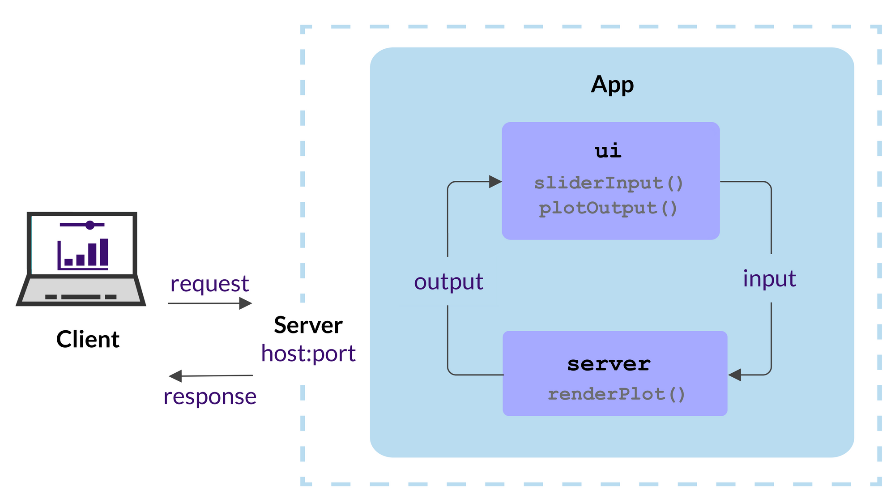
Shiny apps can be used to create interactive document, web application, and dashboard. Check few live shiny apps:


To build high quality Shiny apps, following book (FREE) is recommended:

To build production grade shiny apps which can be used by thousands of users, read following resource:
R/Posit Communities
The classroom learning is only 5% learning. To build real skills for the industry, you are required to communicate with professional networks of R users. These networks help in removing bugs, errors, problems and issues you will encounter while developing projects in R. sFollowing are the platforms to develop a thriving network with R users:
Official Posit community forums
#rstats community: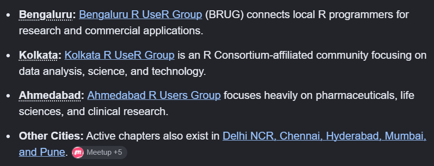
The global R user community group:


Use these communities to get help and give help. Remember, you can get a quality placement useing these networking platforms. Interact with authors, give them credits for their help and extend your help are the hidden tactics to get quality projects and jobs.


Other Parts of R Ecosystem
Package Management Lifecycle: Installing, updating, and loading extensions safely using install.packages(), library(), and CRAN mirrors.
Reproducible Environments: Introduction to renv for locking down package versions to prevent project-breaking dependency updates.
Specialised R Sub-Ecosystems: A high-level overview of ecosystem expansions like tidymodels for machine learning and sf / terra for geospatial analysis.
tidymodels and tidyverse are the most versatile packages to carryout heavy lifting machine learning tasks with simple line of codes using pipe operators, We will discuss these packages in detail in the next units od the course. To gain expertise on these packages, you can visit following resources:


If you learn tidymodels and tidyverse packages thoroughly, majority of machine learning and data analysis tasks can be done through these packages only.
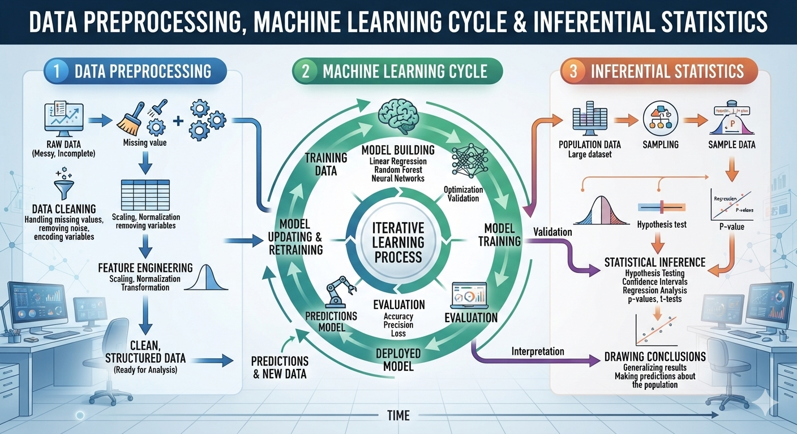
Data Transformations and Preprocessing
When organisations collect data, they do it for their administrative purposes not for using machine learning tasks and advance level data analysis. In machine learning, various model building algorithms are used. Machine learning model uses the data in specific formats.
There are various machine learning algorithms in supervised machine learning. Superwised machine learning algorithms are used either to predict the future values or classify an obervation from tow or more categories.
For example, a company wants to know what will the next month sales based on last five years sales. This is an estimation problem. Machine learning algorithms which can bsed used to create model are linear regression, lasso regression, ElasticNet regression,random forest, decision tree, XGBoost, Support Vector Machine, k-Nearest Neighbours, Multi Layer Perceptron, Recurrent Neural Net, etc.
To classify an observations in given catgories, we use classification machine learning algorithms. To mention a few; decision tree, logistic regression, random forest, naive Bayes, k-NN, Support Vector Machine, XGBoost, Multi Layer Perceptron, Convolutional neural Network, etc.
You can notice that some of the algorithm works in both types of tasks.
Data preprocessing is the step to prepare the data for machine learning tasks so that all data is in ht right format. Following are steps in data preprocessing:
Sometimes, we need to scale the data so that comparison of the variables is possible. For example, we can not compare height in inches with weight in kilogram because both carry different units.
To get them on same scale, we normalize the data by doing Min-Max scaling.
# Normalization (Min-Max Scaling) Formula:
# x_scaled = (x - min(x)) / (max(x) - min(x))
# 1. Base R Approach
normalize_base <- function(x) {
return((x - min(x)) / (max(x) - min(x)))
}
# Example numeric vector
data_vector <- c(10, 20, 30, 40, 50)
normalized_vector <- normalize_base(data_vector)
print(normalized_vector)[1] 0.00 0.25 0.50 0.75 1.00# Output: 0.00 0.25 0.50 0.75 1.00
# 2. Tidyverse Approach (For entire data frames using caret or recipes)
library(recipes)Warning: package 'recipes' was built under R version 4.4.3
Attaching package: 'recipes'The following object is masked from 'package:stringr':
fixedThe following object is masked from 'package:stats':
step# Sample dataset
df <- data.frame(
income = c(25000, 48000, 110000, 85000),
age = c(21, 34, 56, 42)
)
# Create and run a preprocessing recipe
min_max_recipe <- recipe(~ ., data = df) %>%
step_range(all_numeric_predictors(), min = 0, max = 1) %>%
prep()
normalized_df <- bake(min_max_recipe, new_data = df)
print(normalized_df)# A tibble: 4 × 2
income age
<dbl> <dbl>
1 0 0
2 0.271 0.371
3 1 1
4 0.706 0.6 Another way to scale different variables on the same scale is Z-Score scaling in which comparing variables are re-culculated by keeping mean zero and standar deviation 1. See this concept from following image:
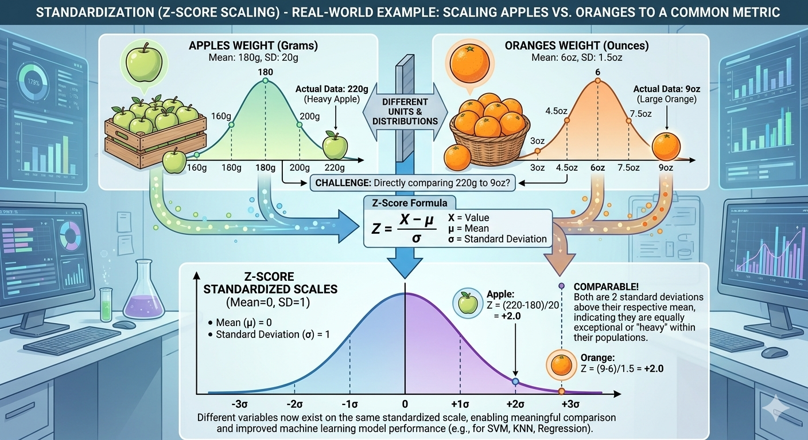
mice or missMDA. Let us understand by the example:Setup Sample Missing Dataset
First, let’s create a small data frame containing missing values (NA) to test our strategies.
# Create a sample dataset with missing values
set.seed(42)
df <- data.frame(
Age = c(25, 30, NA, 45, 50, NA, 35, 40),
Income = c(50000, 60000, 52000, NA, 95000, 105000, NA, 82000),
Score = c(85, 88, 72, 90, NA, 65, 78, 85)
)
print("Original Data with NAs:")[1] "Original Data with NAs:"print(df) Age Income Score
1 25 50000 85
2 30 60000 88
3 NA 52000 72
4 45 NA 90
5 50 95000 NA
6 NA 105000 65
7 35 NA 78
8 40 82000 85This removes any row that contains at least one missing value. Use this only if data is missing completely at random (MCAR) and you have plenty of data left over.
Method A: Base R
clean_df_base <- na.omit(df)Method B: Tidyverse
library(tidyr)
clean_df_tidy <- df %>% drop_na()
print("After Listwise Deletion:")[1] "After Listwise Deletion:"print(clean_df_tidy) Age Income Score
1 25 50000 85
2 30 60000 88
3 40 82000 85This replaces missing values with the average or middle value of that specific column. It is simple but artificially reduces the variance of your data.
library(dplyr)
# Impute Age with Median and Income/Score with Mean
imputed_simple <- df %>%
mutate(
Age = ifelse(is.na(Age), median(Age, na.rm = TRUE), Age),
Income = ifelse(is.na(Income), mean(Income, na.rm = TRUE), Income),
Score = ifelse(is.na(Score), mean(Score, na.rm = TRUE), Score)
)
print("After Mean/Median Substitution:")[1] "After Mean/Median Substitution:"print(imputed_simple) Age Income Score
1 25.0 50000 85.00000
2 30.0 60000 88.00000
3 37.5 52000 72.00000
4 45.0 74000 90.00000
5 50.0 95000 80.42857
6 37.5 105000 65.00000
7 35.0 74000 78.00000
8 40.0 82000 85.00000Multivariate Imputation by Chained Equations (MICE) creates multiple plausible imputations by modeling each feature with missing values as a function of the other features in the data.
# Install package if needed: install.packages("mice")
library(mice)Warning: package 'mice' was built under R version 4.4.2
Attaching package: 'mice'The following object is masked from 'package:stats':
filterThe following objects are masked from 'package:base':
cbind, rbind# Run the MICE algorithm (m=5 creates 5 imputed datasets; maxit=5 sets iterations)
# 'pmm' stands for Predictive Mean Matching (great for numeric features)
mice_imputed <- mice(df, m = 5, maxit = 5, method = 'pmm', seed = 42, printFlag = FALSE)
# Extract one of the complete datasets (e.g., the 1st iteration)
completed_df_mice <- complete(mice_imputed, 1)
print("After MICE Predictive Imputation:")[1] "After MICE Predictive Imputation:"print(completed_df_mice) Age Income Score
1 25 50000 85
2 30 60000 88
3 35 52000 72
4 45 105000 90
5 50 95000 90
6 30 105000 65
7 35 95000 78
8 40 82000 85The missMDA package handles missing data using Principal Component Analysis (PCA). It excels at keeping the dimensional structure and correlations between variables intact.
# Install package if needed: install.packages("missMDA")
library(missMDA)Warning: package 'missMDA' was built under R version 4.4.3# Step 1: Estimate the number of dimensions/components to use for imputation
num_components <- estim_ncpPCA(df, ncp.max = 2)Warning in impute(X, ncp = ncp, scale = scale, method = method, ind.sup =
ind.sup, : Stopped after 1000 iterations# Step 2: Perform PCA imputation based on estimated dimensions
pca_imputation <- imputePCA(df, ncp = num_components$ncp)
# Step 3: Extract the completed dataset matrix and convert to data frame
completed_df_pca <- as.data.frame(pca_imputation$completeObs)
print("After missMDA (PCA) Imputation:")[1] "After missMDA (PCA) Imputation:"print(completed_df_pca) Age Income Score
1 25.0 50000 85.00000
2 30.0 60000 88.00000
3 37.5 52000 72.00000
4 45.0 74000 90.00000
5 50.0 95000 80.42857
6 37.5 105000 65.00000
7 35.0 74000 78.00000
8 40.0 82000 85.00000Comparison of Methods
| Strategy | When to Use | Key Risk |
|---|---|---|
| Listwise Deletion | Drop rate is < 5% and data is missing completely at random. | Loses valuable data and can introduce heavy bias. |
| Mean/Median | Fast baseline calculations on simple datasets. | Destroys correlations and artificially deflates standard deviation. |
| mice (MICE) | General tabular data; protects relationships between columns. | Computationally intensive on very large datasets. |
| missMDA (PCA) | Datasets with highly correlated variables or multi-collinearity. | Assumes linear relationships across components. |
0 or 1) for machine learning models.# Create a sample dataset with categorical text fields
df <- data.frame(
CustomerID = 1:5,
Region = c("North", "South", "East", "North", "South"),
Device = c("Mobile", "Desktop", "Mobile", "Tablet", "Desktop")
)
print("Original Data:")[1] "Original Data:"print(df) CustomerID Region Device
1 1 North Mobile
2 2 South Desktop
3 3 East Mobile
4 4 North Tablet
5 5 South DesktopNow, we convert categorical variable into dummy variables:
# Install if needed: install.packages("recipes")
library(recipes)
# Define the transformation recipe
rec <- recipe(~ ., data = df) %>%
step_dummy(all_nominal_predictors(), one_hot = TRUE) %>% # Convert text columns to dummies
prep()
# Apply the transformation matrix to your data
df_recipes_dummies <- bake(rec, new_data = df)
print("With Tidyverse Recipes:")[1] "With Tidyverse Recipes:"print(df_recipes_dummies)# A tibble: 5 × 7
CustomerID Region_East Region_North Region_South Device_Desktop Device_Mobile
<int> <dbl> <dbl> <dbl> <dbl> <dbl>
1 1 0 1 0 0 1
2 2 0 0 1 1 0
3 3 1 0 0 0 1
4 4 0 1 0 0 0
5 5 0 0 1 1 0
# ℹ 1 more variable: Device_Tablet <dbl>Why we need to create dummy variable instead of original variable? Because many machine learning algorithms do not read categorical data and need only numeric form of data.
Basic Architecture of Machine Learning Analytical Cycle
This s very important part of a machine learning project cycle. This sets the core purpose of the machine learning project. As there are two types of tasks - classification and estimation; this must be defined clearly.
A business wants to predict the next month sales is an estimation tasks while tomorrow, there will be rain or not is a classification problem.
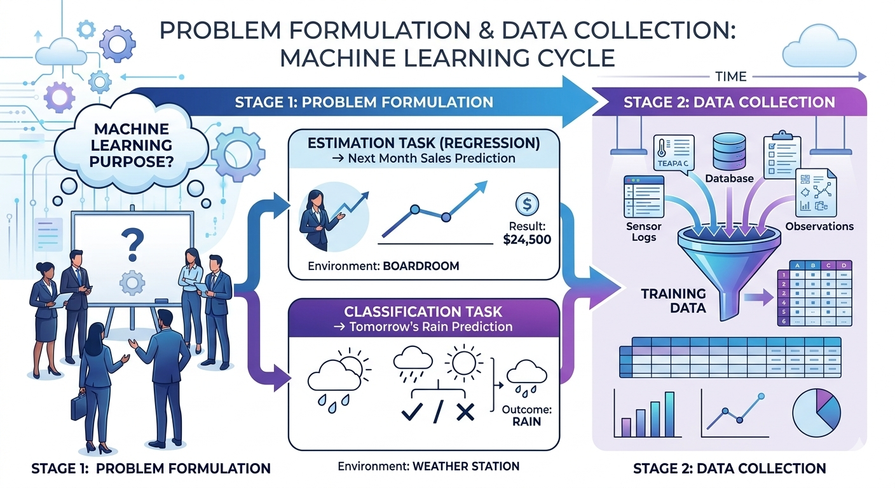
Before applying machine learning models, each variable, pairs of variables are analyzed through Exploratory Data Analysis. Exploratory data analysis(EDA) is useful in defining the pathway to select the machine learning tasks and model building process, though EDA is directly not involved in machine learning tasks and model building process. We will discuss this in more detail in the next units.
Once data is preprocessed and EDA is done, data is split into training and testing. Model is trained on training data using appropriate machine learning algorithm and model is validated/tested for accuracy on testing data. This process is repeated again and again to improve the model by doing hyperparameter tuning.
Once highest accuracy is achieved, model is ready for deployment and become available for real world use cases. For estimation tasks, we use Root Mean Squared Error and for classification tasks, we use confusion matrix to check accuracy of the model.
There are numerous other metrices we use to check evaluate machine learning models.
Descriptive Analytics Case Study (Covering Data Manipulation)
Hypothesis Testing & Statistical Modeling Framework